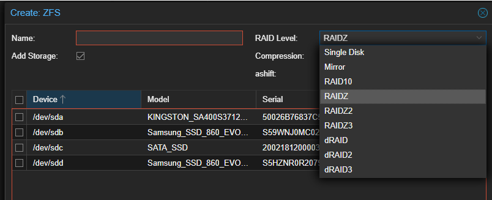
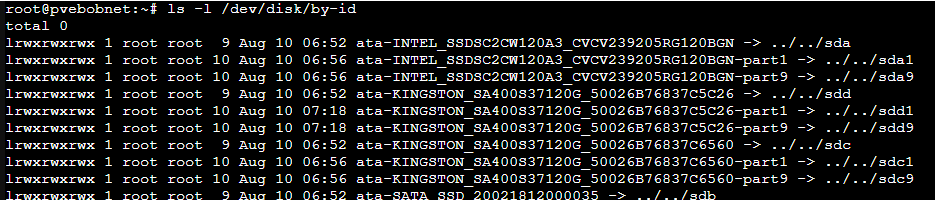
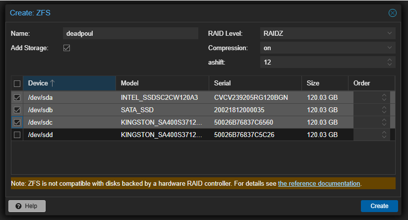
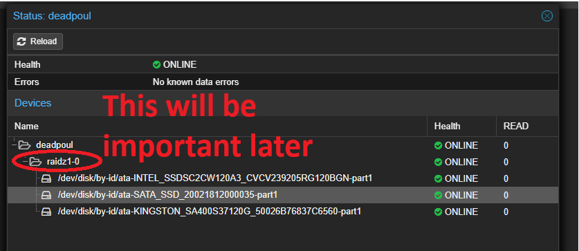
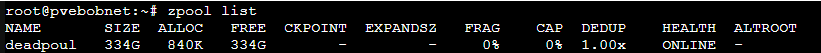
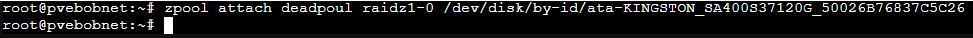
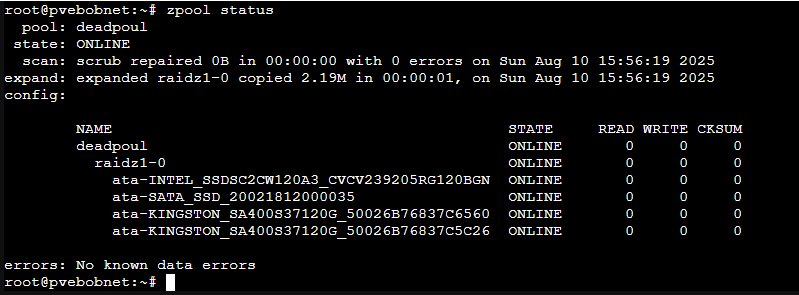

Expand raidz pool by adding a disk – ZFS expansion in Proxmox 9
August 10, 2025
Proxmox 9 just dropped. It now has support for ZFS 2.3.3. ZFS has had raidz expansion available since ZFS 2.3
This guide shows you how to add a disk to an existing zfs pool.
From github:
“A new device (disk) can be attached to an existing RAIDZ vdev, by running zpool attach POOL raidzP-N NEW_DEVICE, e.g. zpool attach tank raidz2-0 sda. The new device will become part of the RAIDZ group. A raidz expansion will be initiated, and the new device will contribute additional space to the RAIDZ group once the expansion completes.
The feature@raidz_expansion on-disk feature flag must be enabled to initiate an expansion, and it remains active for the life of the pool. In other words, pools with expanded RAIDZ vdevs can not be imported by older releases of the ZFS software.“
#1 – you should have an existing zpool
For testing, I will create a new zpool using the web gui.

Ideally, understand the commands that are used to create the pool, and they are listed below.
| Single Disk | zpool create poolname /dev/sda |
| Mirror | zpool create poolname mirror /dev/sda /dev/sdb |
| Raid10 | zpool create poolname mirror /dev/sda /dev/sdb mirror /dev/sdc /dev/sdd |
| Raidz | zpool create poolname raidz /dev/sda /dev/sdb /dev/sdc |
| Raidz2 | zpool create poolname raidz2 /dev/sda /dev/sdb /dev/sdc /dev/sdd |
| Raidz3 | zpool create poolname raidz3 /dev/sda /dev/sdb /dev/sdc /dev/sdd /dev/sde |
| |
| --- |
|
To find the names, run ls -l /dev/disk/by-id

Creating the raid pool:
In my example, I am selecting raidz, naming it deadpoul, and selecting sda,sdb,sdc and leaving sdd blank.

(Initially, I started with mismatched drive sizes, but it failed to create, as it would not let me use dissimilar sized drives. This can be overridden by passing the -f command (force) but that can’t be passed from the UI, so you would have to do it from the CLI. I swapped out to all similar drives just to make things easier.) #2 – You have a pool – what is everything named? After the pool is created, take a look at it by clicking details in the proxmox ui.

#3 Query the pool from cli and see the result
zpool list

and now the magic…
#4 Install and extend the zpool to the new drive.
(this can only be done from CLI) syntax for the command is zpool attach
my example: zpool attach deadpoul raidz1-0 /dev/disk/by-id/ata-KINGSTON_SA400S37120G_50026B76837C5C26

That raidz vs raidz1-0 thing really messed me up for a while. I kept using “raidz” and it would not work. check the status: disk added successfully!

: |